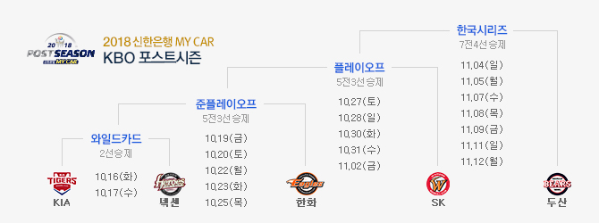

나라마다 야구 리그가 있는 나라들이 몇몇 있는데 우리나라도 그 중 하나이다.
우리나리의 리그 이름은 Korea Baseball Organization League의 줄임말로 KBO League 또는 KBO 리그라고 한다.
이 페이지에서는 간단한 KBO의 역사와 시즌이 어떻게 이루어지는지를 살펴볼 것이다.
<KBO 리그의 역사>
KBO 리그는 1982년 창설된 한국의 프로야구리그이다. 창설시 참가한 구단들은 6개(삼성 라이온즈, OB 베이즈, MBC 청룡,
삼미 슈퍼스타즈, 해태 타이거즈, 롯데 자이언츠)이며, 당시에는 16경기씩 5팀과 붙어 총 팀당 80경기를 뛰었다.
이듬해인 1983년에는 100경기로 늘었다가 1985년에는 110경기, 1986년에는 빙그레 이글스가 들어오며 18경기씩 6팀과 붙어
108경기를 하게 되는 등 경기 수는 계속 바뀌었다. 2019년 현재는 총 10개의 팀으로, 16경기씩 9팀과 붙어
144경기의 정규시즌을 치르고 있다. 1982년부터 1997년을 초창기, 1998년~2006년은 암흑기, 2007년~2012년은 중흥기, 2013~현재까지는 안정기라고 한다.
초창기에 전라도에 연고지를 둔 해태 타이거즈가 프로야구 인기의 견인차였다. 선동열과 이종범 등으로 대표되는 스타 선수들의
존재감과 1983년 우승을 시작으로 1986~1989년도의 4년 연속 우승기록 등 통산 우승 달성 9회라는 대기록을 세우며 화제의 중심에 있었다.
또한 8개구단 체제가 본 궤도에 오른 1993~1996년 시즌은 관객 동원이 4년 연속 400만을 돌파하여 야구 열기가 굉장히 뜨거웠다.
암흑기는 1997년 말 터진 외환 위기로 시작되었다. 외환 위기로 인한 소비 축소, 1999년과 2000년에 시행한 양대리그 체제의 실패,
미국과 일본에 진출한 선수들의 활약들을 보며 국내리그와의 수준 격차를 보이며 국내야구 외면, 2002 한일 월드컵 열풍 등 연속적인 악재로
흥행 암흑기를 맞았다. 1993~1996시즌이 매시즌 400만 관중을 넘긴 흥행시즌이였다면, 2000~2004시즌은 5시즌 연속
200만명대 관중을 기록하는 데에 그친 암흑기였다.
중흥기는 2006년 월드 베이스볼 클래식(WBC)에서의 극적인 우승이 기점이라고 할 수 있다. 이 대회 이후 2007년 관중이 크게 늘어났었고,
2008년 베이징 올림픽 9전 전승 금메달, 2009년 WBC 준우승과 인기팀 KIA 타이거즈(前 해태 타이거즈)의 우승, 2010년 광저우 아시안 게임 금메달로
대중들에게 꾸준하게 즐거움을 주었다. 다른 이유로는 2008년부터 시작된 전 구장 동시 케이블TV 중계도 있다.
안정기는 2008~2012년까지의 프로야구 황금기를 거치며 신규 팬들이 많이 유입되며 시작되었다. 2011~2014년까지 4년 연속 600만 관중 돌파,
2015년 처음으로 700만 관중 돌파, 2016년에는 전년을 뛰어넘으며 처음으로 800만 관중을 돌파하였고 2016~2018년까지 3년 연속 800만 관중을 돌파하였다.
하지만 팬들의 경기를 보는 눈도 올라가면서 그동안 묻혀있던 문제점들이 제기되고 있다.
<KBO 리그의 시즌>
- 정규시즌 : 페넌트레이스라고도 부르며 정규시즌은 현재 10팀이 각각 다른팀과 16번씩 맞붙어 총 144경기를 치르게 된다. 정규시즌에서 5등안에 등 상위 5개 팀이 가을야구라고 불리는
포스트시즌에 진출하게 된다. 페넌트레이스 우승팀은 한국 프로야구 결승전 매치인 한국시리즈에 자동 진출하게 된다.
- 포스트시즌 : 포스트시즌은 상위 5개 팀만 진출할 수 있다. 맨 아래에 사진과 같이 보면 이해가 쉬울 것이다.
- 와일드카드 : 페넌트레이스 4위 팀과 5위팀이 맞붙는 포스트시즌 경기이며, 4위에게는 2판 중 1판만 이기면 되고, 자신의 홈 경기장에서 경기를 할 수 있는 어드벤티지가 주어진다.
5위는 2판을 다 이겨야 상위 라운드인 준플레이오프에 진출하게 된다.
- 준플레이오프 : 와일드카드 승자와 페넌트레이스 3위팀이 맞붙는 시리즈이다. 5판 3선승을 거둔 팀이 다음 시리즈인 플레이오프에 진출하게 되고,
1, 2, 5경기는 3위팀의 홈 경기장, 3, 4경기는 와일드카드 승자의 홈 경기장에서 경기를 치루게 된다.
- 플레이오프 : 준플레이오프 승자와 페넌트레이스 2위팀이 맞붙는 시리즈이다. 플레이오프도 준플레이오프와 똑같이 5판 3선승에, 1, 2, 5는 2위팀, 3, 4,경기는 준플레이오프 팀 홈 경기장에서 하게 된다.
- 한국시리즈 : 페넨트레이스 우승팀과 플레이오프 승리팀이 맞붙는 시리즈이다. 가을야구의 하이라이트인 동시에 해당 년도 모든 프로야구 경기의 마지막을 장식한다.
시즌 우승을 페넌트레이스 1위가 아닌 한국시리즈 승리팀으로 결정하므로, 한국시리즈에 더 큰 가치를 부여한다. 한국시리즈는 총 7전 4선승으로 치뤄지게 되고 1, 2, 6, 7경기는
정규시즌 우승팀 홈 경기장에서, 3, 4, 5경기는 플레이오프에서 올라온 팀의 홈 경기장에서 치뤄지게 된다.
한국시리즈 최다 우승팀은 KIA 타이거즈(전신 해태 타이거즈 포함)의 11회, 최다 진출팀은 삼성 라이온즈의 17회이다.
[ 포스트시즌 사진 예시 ]
